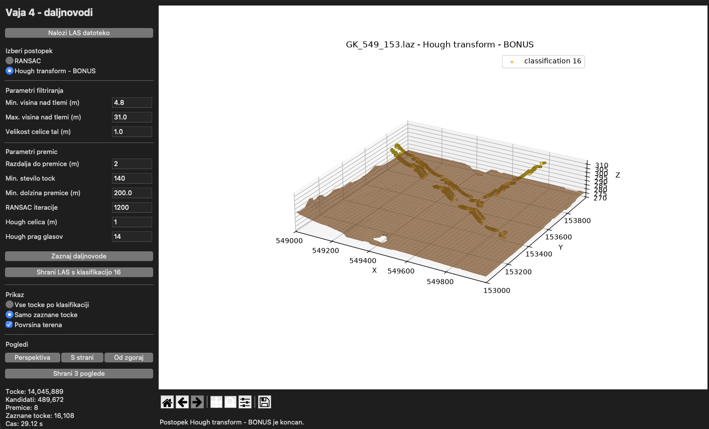
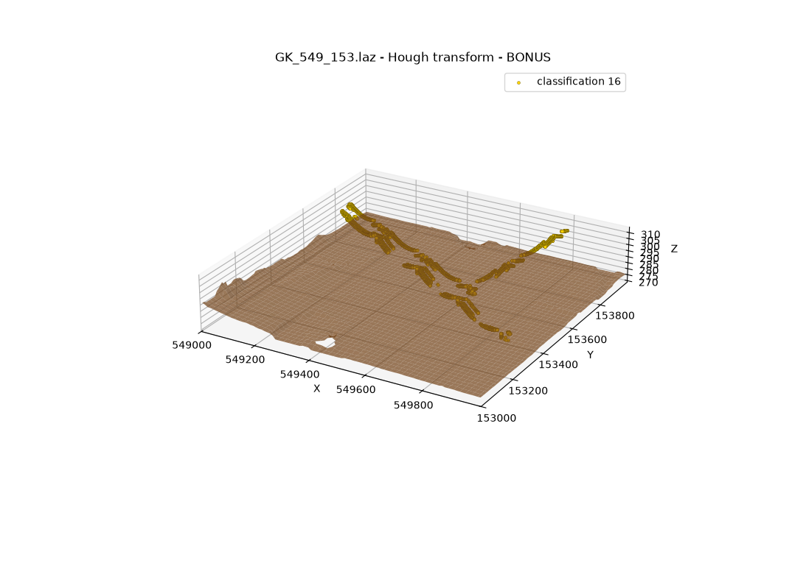
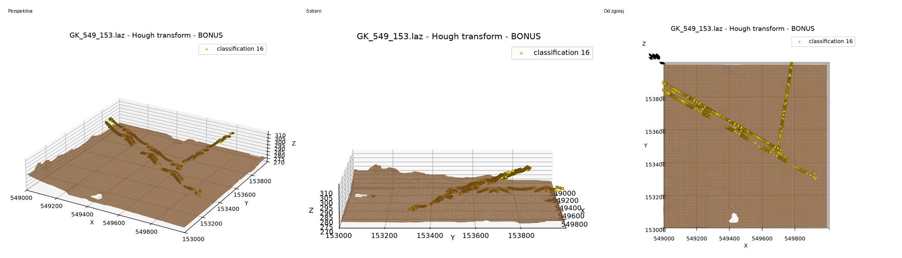
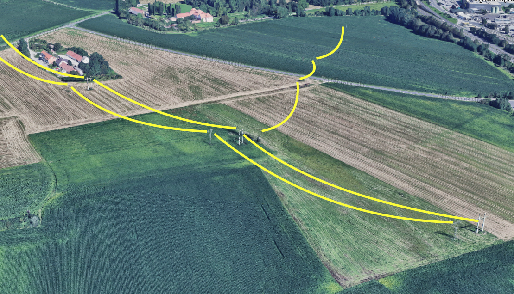
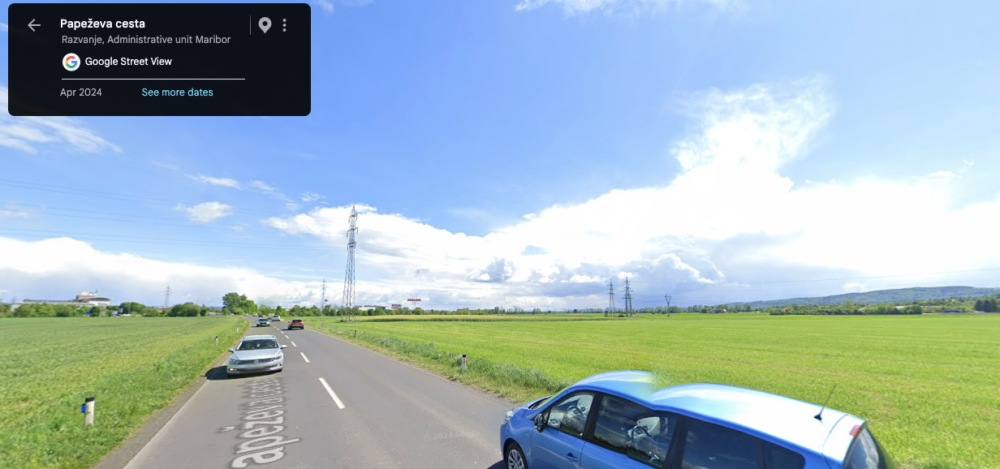
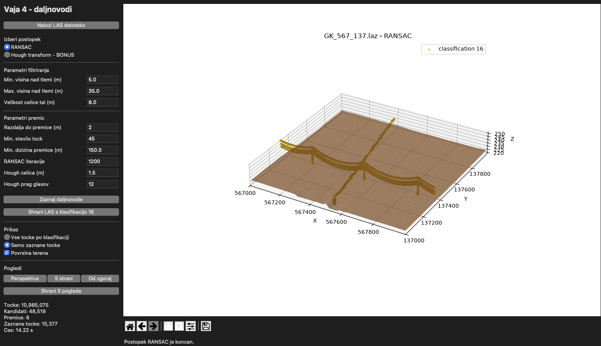
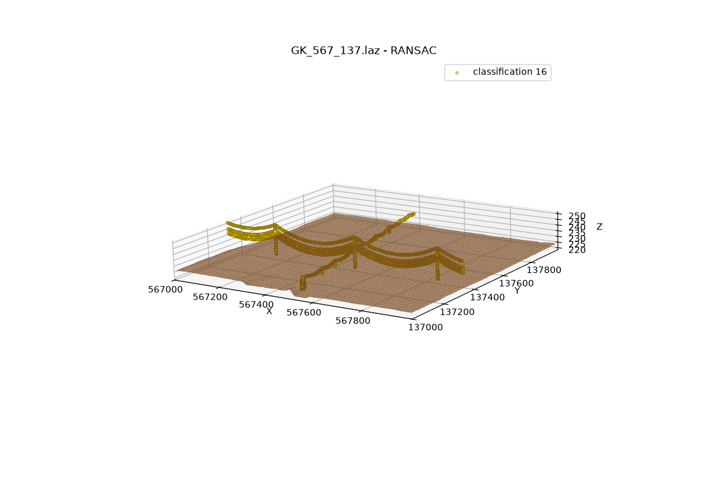
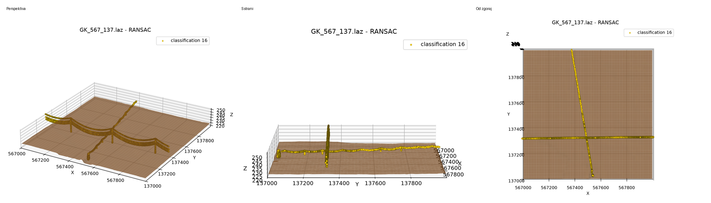
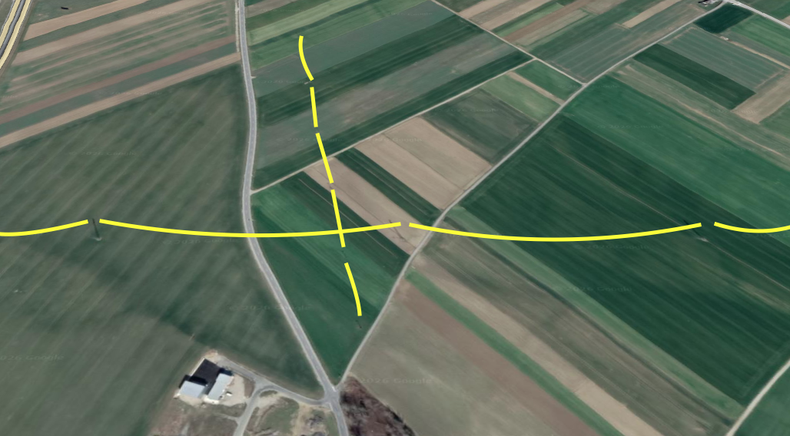
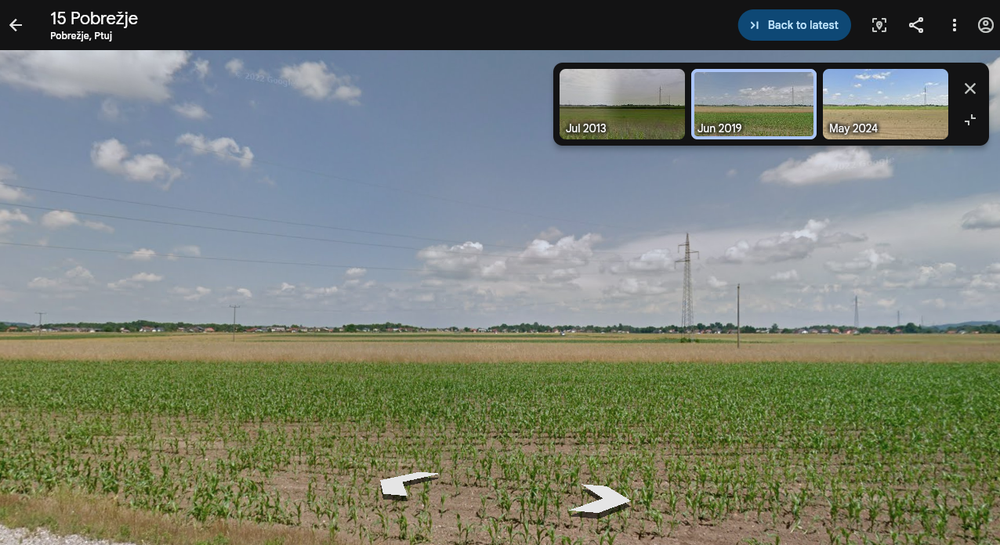

LiDAR Power Line Detection
I made a desktop app that detects power lines in LAS and LAZ point clouds. The app supports both Hough transform and RANSAC, then exports detected points with classification 16.
Area GK_549_153
I used the Hough transform for this area and checked the result in the application, on a map, in Street View, and from several point-cloud angles.





Area GK_567_137
I used RANSAC for this area and repeated the same validation process.




